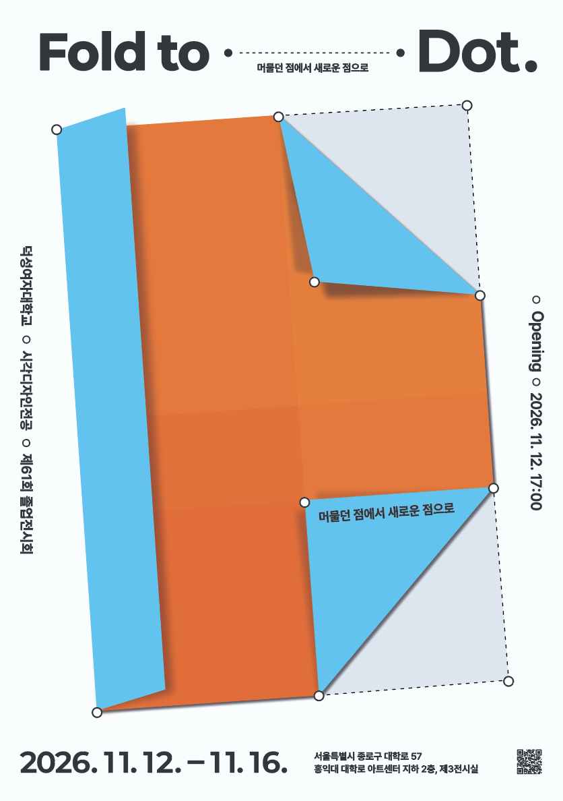

덕성여자대학교 시각디자인전공 제61회 졸업전시
Fold to Dot.
대학에서 머물던 각자의 점은 다양한 경험과 시간을 거치며 하나의 형태로 접힙니다.
서로 다른 배움과 가능성이 쌓인 시간은 각자의 일부가 되고,
우리는 그 경험을 바탕으로 다시 새로운 점을 향해 나아갑니다.
접힌 종이가 펼쳐지며 이전과는 다른 모습을 드러내듯,
졸업은 익숙한 자리에서 벗어나 새로운 가능성을 마주하는 과정입니다.
Fold to Dot은 지금까지의 경험을 바탕으로 각자의 다음 점을 찾아 나서는 졸업전시입니다.
서로 다른 방향으로 이어질 각자의 새로운 출발을 함께하는 이곳에 여러분을 초대합니다.
- 날짜
- 2026.11.12.(목) — 2026.11.16.(월)
- 시간
- Opening 11.12. 17:00
12일 17:30~18:30
13일 — 16일 9:00~18:00 - 장소
- 서울특별시 종로구 대학로 57
홍익대 대학로 아트센터 B2, 제3전시실
졸업전시준비위원회
위원장김채윤부위원장이슬아
총무황연우
디자인팀한예진 최지현 고주영
영상팀신은서 김다희도록팀이현정 유하늘
홍보팀서단